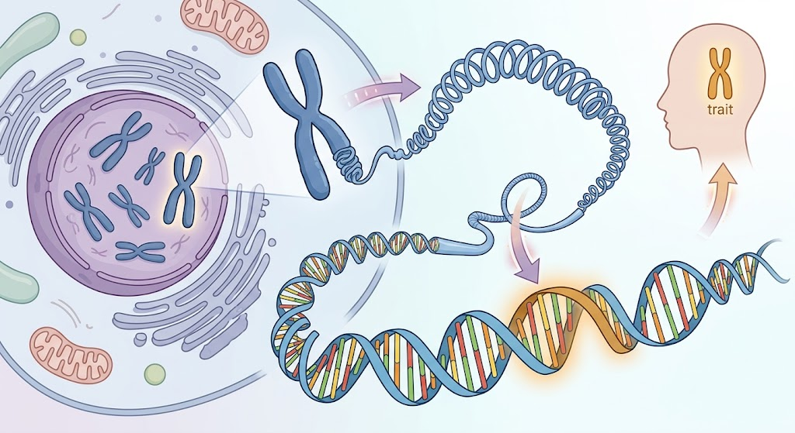

โครโมโซม ยีน และ DNA
DNA (Deoxyribonucleic Acid) เป็นสารพันธุกรรมที่ทำหน้าที่เก็บข้อมูลทางพันธุกรรมของสิ่งมีชีวิต DNA มีโครงสร้างเป็นสายคู่ที่พันกันเป็นเกลียว และประกอบด้วยหน่วยย่อยที่เรียกว่า นิวคลีโอไทด์ ซึ่งมีเบส 4 ชนิด ได้แก่ อะดีนีน (A), ไทมีน (T), ไซโทซีน (C) และกวานีน (G) โดย A จะจับคู่กับ T และ C จะจับคู่กับ G ลำดับของเบสเหล่านี้เป็นข้อมูลที่ใช้ควบคุมการทำงานและลักษณะต่าง ๆ ของสิ่งมีชีวิต
ยีน (Gene) คือส่วนหนึ่งของ DNA ที่มีข้อมูลทางพันธุกรรมสำหรับควบคุมลักษณะหรือการทำงานบางอย่างของสิ่งมีชีวิต ยีนสามารถกำหนดข้อมูลที่เกี่ยวข้องกับการสร้างโปรตีนหรือควบคุมกระบวนการต่าง ๆ ในเซลล์ ตัวอย่างเช่น ยีนบางชนิดมีส่วนเกี่ยวข้องกับสีของดวงตา สีผม หรือหมู่เลือด
โครโมโซม (Chromosome) คือโครงสร้างที่เกิดจาก DNA พันรอบโปรตีนและขดตัวอย่างเป็นระเบียบ ทำให้สามารถจัดเก็บ DNA จำนวนมากไว้ภายในเซลล์ โครโมโซมส่วนใหญ่อยู่ภายในนิวเคลียสของเซลล์ และแต่ละชนิดของสิ่งมีชีวิตจะมีจำนวนโครโมโซมแตกต่างกัน
ดังนั้นสามารถอธิบายความสัมพันธ์ได้ง่าย ๆ ว่า DNA เป็นสารพันธุกรรม ยีนเป็นส่วนหนึ่งของ DNA และยีนจำนวนมากจะอยู่บนโครโมโซม ทั้งสามสิ่งมีความเกี่ยวข้องกันและมีบทบาทสำคัญในการเก็บและถ่ายทอดข้อมูลทางพันธุกรรมจากพ่อแม่ไปยังลูก